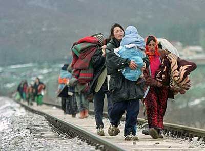

|
|

رودخانه اي خروشان با امید رسیدن به دریا و قربانیان آرزو، اعظم بهرامی
مهاجرت و آسيب شناسي آن براى زنان و كودكان
پنج شنبه16 خرداد 1392
پديده مهاجرت و آسيب شناسي ان براى زنان و كودكان
تغییر برای برابری - اعظم بهرامی
کمیساریای عالی پناهندگان سازمان ملل متحد (UNHCR)در گزارشی که به تازگی از سوی این نهاد منتشر شده اعلام كرده که تعداد کودکان افغان که در سال 2009 خواستار پناهندگی در اروپا شدند به پنج هزار و نهصد نفر می رسد در حالی که این آمار در سال 2008، فقط سه هزار و سيصد و هشتاد نفر بود. اين مسئله براى كودكاني كه آماررسمي از آنها موجود نيست مثل كودكان ايراني، كرد، سوري و فلسطيني، كه در اين يكي دو سال اخير به شدت افزايش يافته اند، حتي به شكل رسمي، قابل پيگيري و آسيب شناسي نيست. مگر با گزارشهاي مستند وشواهد شاهدين و يا مهاجراني كه خود اين راه را طي كرده و در كمپ هاي ويژه ساكن بوده اند.
درگزارش ارائه شده از سالي كه گذشت، خانم پيلاي پيرامون مسائلي چون تبعيض، پديده مهاجرت و نابساماني آن هم در بستر قوانين و هم در اجرا و نيز خشونتهاي اشكار عليه زنان ابراز نگراني كرد. آسيب شناسی وضعيت كودكان و زنان در مهاجرتهاي اجباري از جمله مواردی است كه تمامي گزاره ها را شامل ميشود. هرساله هزاران نفر در جستجوي شرايط بهتر كار و زندگي، امنيت جاني ويافتن آزادي ، صلح و آرامش ، سختي راه دشواري را بر خود هموار مي كنند كه امار نشان مي دهد در بيش از ٨٠ درصد موارد از سختي و خطرهاي آن اگاهي ندارند.
با توجه به تجربيات فردي و صحبتهاي مستند و ضبط شده اي كه با تعداد زيادي از مسافران اين مسير داشتم ، به نظر می آید که می توان براى تحليل بهتر موضوع و آسيب شناسي وضعیت كودكان و زنان، اين مسير را به سه بخش اصلي تقسيم كرد. آن سه بخش اصلي شامل مسير، دوران سكونت اين افراد در تركيه ويونان و سپس جابجا شدن آنها توسط قاچاقچيان انسان در داخل خاك اين كشورها و خروج غير قانونيشان از تركيه و يونان و ورود به كشور امن نهايي است.
انتهاي مسير، ضرورت آسيب شناسي وضعيت اين كودكان و زنان طي زمان اقامتشان در كمپهاي ويژه ي مهاجران در كشور مقصد است. كه بايد در فرصتی مناسب و زمانی بیشتر مورد تحليل روانشناسانه و جامعه شناسانه قرار بگیرد.
مسیر نه چندان هموار
بخش اول مسیری است که افراد برای رسيدن به يونان يا تركيه طی می کنند. ترکیه براى بخش عمده اي از مهاجرين، دروازه عبور است، از آن رو، راهي را كه بايد توسط اين مسافران طي شود و خطراتي كه آنها را در اين مسير تهديد مي كند بررسي مي كنم. در طی مسیر، در مورد زنان و كودكان، نقش همراه مهم است. كودكان گاه تنها و يا با سرپرستي يك بزرگسال تن به مهاجرت مي دهند. بسيار پيش مي آيد كه زنان در گريز از تبعات و آسيبهاي نابرابريهاي اجتماعي و احكام قضايي ناعادلانه به واسطه فعاليتهاي سياسي يا اجتماعيشان، يا فرار از ازدواج هاي اجباري و ناامني هاي اجتماعي براى تجربه امكان زندگي آزاد و آرام، به تنهایی یا به همراه كودكانشان راهي اين مسير دشوار مي شوند.

مسيرهايي كه قاچاقچيان انسان براى جابجا كردن مسافران انتخاب مي كنند معمولن براى گريز از ايستهاي مرزي و بازرسي و نيز گشتيهاي احتمالي از قسمتهاي صعب العبور طبيعت انتخاب مي شود. از ميانه رودخانه ها و سنگلاخها و مناطق جنگلي بكر. اين مسيرها كه به شكل پياده يا با چهار پايان طي مي شود توان فيزيكي بسيار بالايي را مي طلبد كه كودكان و تعدادي از زنان، از آن بي بهره اند . كودكان روزها سرگردان و خسته بدون تغذيه و پوشش مناسب بدنبال بزرگترهاي جمع خودشان را مي كشانند بدون آن كه بدانند چرا بايد روزهاي شيرين كودكيشان را در اين تلخي جانكاه سپري كنند. آنهايي كه والدين يا آشناي بزرگسالي همراه دارند شانس بيشتري خواهند داشت، اما براى كودكان و زناني كه اغلب به علت هزينه بالاي اين گونه سفر و مشكلات مالي خانواده و يا عدم رضايت سرپرستشان تنها به اين سفر تن مي دهند وضعيت اسفناكتر است. زنان و كودكان اغلب طعمه خوبي هستند براى سوء استفاده قاچاقچيان جهت حمالي و كارگري در طول مسير و يا سوء استفاده هاي جنسي ، اغلبشان بر اثر تغذيه نامناسب به شدت بيمار مي شوند و مي ترسند از اینکه بيماري و دردشان را بروز دهند. تنها امكان درماني، داروهايی است كه مسافران ديگر همراه دارند. در طول مسير، كودكان خردسال براى امنيت ديگر اعضاي گروه در حال حركت مجبور به خوراندن داروهاي خواب آور قوي توسط والدينشان هستند. به تجربه فردي خودم، خانواده هايي را در طول سفر شاهد بودم كه به خاطر همراه داشتن كودكان خردسال و نوزاد، از ادامه مسير پياده روي در كوه باز ماندند و توسط قاچاقچي همانجا رها شدند. بعدها براى شش نفر ديگر كه دو نفر آنان سالمند و بقيه كودك بودند نيز همين حادثه درجنگلي، درقسمتهاي ساحلي شهر ازمير تركيه اتفاق افتاد. آنها در سرماي بهمن ماه در جنگل رها شدند و من هرگز نفهميدم چه بر سرشان آمد.
براى ما و گروه همراه مان تقريبن يك هفته به طول انجاميد تا از مرز ايران به شهر وان در تركيه برسيم (كه اين زمان براى گروههاي مختلف متغير است ) و در تمام اين مدت غذای ما تنها نان و ماست بود و به حمام دسترسي نداشتيم.
مسافران كه اغلب در دسته هاي ١٥ تايي يا كمي كمتر حركت مي كنند گاه مجبورند شب را درمكانهاي بسيار نامناسب مانند طويله، بيابان يا زيربارش باران بدون پناهگاه سركنند. اغلب كودكان همراه اين گروهها به خصوص در ماههاي سرد سال، در تمام طول سفر بيمارند. پيش مي آمد كه قاچاقچي مسافرانش را به پليس بفروشد. به اين شكل كه مسافرانش را درجايي رها مي كند با وعده ي اينكه داريم براى جابجايی تان هماهنگ مي كنيم و يا خبر داده اند كه مشكلي پيش آمده و غيره، پی گیر این کار شود اما در فرصتي مناسب فردي از طرف گروههاي قاچاقچيان انسان، محل اختفاي مسافران را به پليس اطلاع دهد. در اين حالت قاچاقچي از پرداخت هزينه هاي خورد و خوراك و محل خواب براي مدتي فارغ است و تعدادي هم توسط پليس ديپورت مي شوند كه وضعيت پول هاي پرداختي شان و احيانن وسايلشان مجمل مي ماند.
مطمئنن هيچ كدام از اين دو نه پليس و نه قاچاقچيان انسان نگران سلامتي كودكان بي گناهي كه ميان اين سودا گري بزرگترها مانده اند، نيستند. زناني كه تنها سفر ميكنند اغلب در محدوديت و مسئوليت فرزند يا فرزندانشان اسير و درگير مي مانند ونگرانيشان چندين برابر است . علاوه بر مشكلاتي كه در طبيعت براى اين مسافران وجود دارد احتمال تعقيب و گريز يا تير اندازي توسط پليس نيز از آسيبهاي گريز ناپزير اين نوع سفر است. در اين گونه مواقع كودكان به عنوان سپر بازدارنده پليس مورد سوء استفاده قرار مي گيرند. كه البته بعدها ديدم براى قاچاقچيان اين رسم معمولي است .
کمپ های ایزوله شده و تحقیر مهاجران اجبار
اما رسيدن به تركيه و سكونت در خانه هايي كه قاچاقچيان از قبل تدارك ديده اند تا مسافران را براى مدت نا معلوم در آن اسكان دهند نيز آغاز دور جديدي از مجموعه خطرهايي است كه كودكان را تهديد مي كند.در اينجا دو انتخاب وجود دارد :
اعلام پناهندگي به دفاتر سازمان ملل و هزينه كردن مبالغ هنگفت براى ادامه ي سفر به شكل قاچاقي و غير قانوني.
براى كساني كه در تركيه به سازمان ملل اعلام پناهندگي نكنند، چون اوراق هويتي ندارند هيچ امكاناتي در مورد اسكان و تغذيه و استفاده از خدمات پزشكي و دارو وجود نخواهد داشت . من خود تجربه داشته ام كه خانواده ها بعضن ٤٠ تا ٥٠ نفر، براى مدتها در خانه اي كوچك محبوس مي شوند وگاه براى ماهها تنها از عدس و ماست و ماكاراني تغذيه مي كنند. براى كودكاني كه شيرخشك يا غذاي كمكي مي خورند و يا از پوشك استفاده مي كنند وضعيت اسفبار است خانواده ها مجبورند چندين برابربهای واقعی پرداخت كنند تا بتوانند اين نيازها را توسط قاچاقچيان برآورده كنند.
گذشتن زمان واكسيناسيون ، عدم دسترسي به امكانات اموزشي و مشكلات روحي ناشي از محبوس ماندن در اتاقهاي كوچك علاوه بر تمام مشكلات روحي و جسمي كه براى كودكان بوجود مي آورد، والدين را در سفري كه بازه ي زمانيش نامعلوم است كلافه ومستاصل مي كند.
زندگي ٢٠ روزه در كمپهاي ايزوله و كنترل شده ي تركيه كه جايي شبيه بندهاي عمومي زندان بود نيز برايم روشن كرد ، در مكانهاي تحت كنترل دولت تركيه نيز وضعيت بهداشت روحي و جسمي براى كودكان و بزرگسالان ، شرايط بسيار غير استانداردي دارد. عدم دسترسي به حمام، هوا خوريهاي محدود به ٢ يا ٣ ساعت در روز ، تغذيه نامناسب ، محروميت از ديدار پدر( اگر همراه خانواده باشند)بيماريهاي پوستي و كابوسهاي شبانه، از مشكلاتي است كه آنجا شاهدش بودم.
نا امنی در مسیر رسیدن به امنیت
جابجا شدن به سمت كشور مقصد كه اغلب چندان روشن نيست كجا باشد و در نهايت تحمل تمام خطرها و صرف هزينه ها به عوامل بسياري بستگي دارد، نيز خودش داستان مفصلي است . سفر با هواپيما با مدارك جعلي كه در تعداد محدود و زمانهاي محدود امكانپذير است و اغلب به علت ريسك و هزينه ي بالا چندان راحت نيست . سفر كردن با كاميون ، كه افراد كف آن جاسازي مي شوند بدون دسترسي به امكان دستشويي و خطر خفگي و يا سفر دريايي با كشتيهاي كهنه و فرسوده ماهيگيري ، روش هايی است كه براى رسيدن به كشور مقصد وجود دارد. اما نامعلوم بودن زمان حركت و زمان طول سفر امكان برنامه ريزي و پيش بيني هزينه ها را از مسافرين مي گيرد و بعضن آنها را در تنگناي سختي قرار مي دهد و گاه مجبور به كارهاي بسيار دشوار و يا خلاف مي كند ، مانند تن فروشي يا توزيع و جابجايي مواد مخدر يا كار در كارگاهها و زيرزمينهاي تاريك در ساعتهاي طولاني و پرداختهاي بسيار ناچيز. چرخه اي كه گاه قربانيانش دختران نوجوانند و يا پوشك و قنداق كودكان معصوم و يا نوجواناني كه خيلي زود بار مسئوليت تغيير زندگي خانواده هايشان را به عهده گرفته اند. گروگانگيري مسافرين ، قطع بعضي اندام انها براى ايجاد رعب و وحشت و اخاذي از خانواده هاي مسافرين، از روايات دردناك ديگر اين سفر است.
مادري را مي شناختم كه تنها همراه پسر معلولش مدتها در تركيه سرگردان بود، و در يكي از همين جابجايي ها مجبور شده بود ٤ شب را با پسر بيمارش در يك سرپناه پلاستيكي در جنگل سركند، بدون دارو و غذاي كافي، ويا تمام پول يك نوجوان افغان را كه به بهاي يك سال كارگري در تركيه جمع كرده بود، قاچاقچيان در ازاي پاسپورت يك سگ خانگي از او گرفته بودند.
آنانی كه با قايقهاي كهنه و فرسوده سفر مي كنند اغلب مي دانند كه اين سفر بسيار خطر ناك است . آمار كشته شدگان در حوادث دريايي ثبت و ضبط است. اگر قايق توسط پليس ساحلي تعقيب شود مسافران و ترجيحن كودكان در آب انداخته مي شوند تا سرعت پليس كم شود. اين امكان وجود دارد كه اعضاي خانواده براي مدتها یکدیگر را گم كنند و بچه ها از والدينشان جدا شوند. دريا زدگي و خطر غرق شدن هم كه بزرگ و كوچك نمي شناسد. به تمام اين خطرات احتمالي گم شدن بي آب و غذا در دريا و مشكل غذا و تنفس در موتورخانه هاي دود زده و تاريك را اضافه كنيد.
البته كودكاني كه در نهايت به نقطه ي امني مي رسند ، حتي بيمار و رنجور، كودكان خوش شانسي بوده اند كه همين تن و روح نحيف و بيمار را به مقصد رسانده اند ، چون بسياري هستند كه در اين مسير جان مي دهند و بعد دولتها در برنامه هاي نمايشي برايشان گل به امواج بي رحم دريا مي سپارند و گاه حتي اندام كوچك و معصومشان هيچ وقت پيدا نمي شود .
مهاجرت غير قانوني با هر دليلي كه باشد رودخانه اي است خروشان كه كسي نمي داند به دريا مي رسد يا نه ،اما ماهيان بسياري كوچك و بزرگ به اميد رهايي و رسيدن به دريا در آن شنا مي كنند و اين ميان ماهيگيران زيادي از نيروهاي مرزي و پليس تركيه و ايران و يونان و ايتاليا و ديگر كشورها گرفته تا قاچاقچيان مواد مخدر و انسان و اعضاي بدن، از ماموران اطلاعات و امنيت ايران و تركيه گرفته تا كارگران و كارمندان كمپهاي ويژه ي پناهندگان، همه و همه تورهاي كوچك و بزرگشان را گسترده اند تا به قد توانشان از اين رودخانه سود به جيب بزنند و آنچه اين ميان ديده نمي شود قربانيان آرزو از دست داده اند، ماهيهاي كوچك و بي گناهي كه حتي شنا كردن را هم خوب نميدانند.